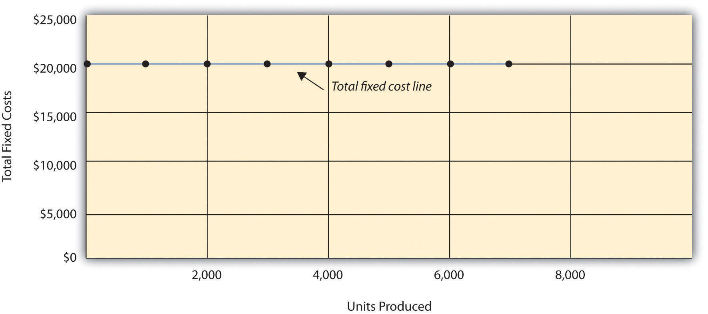
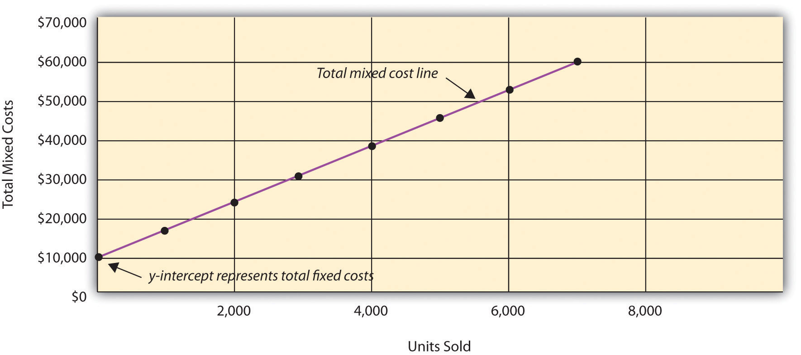
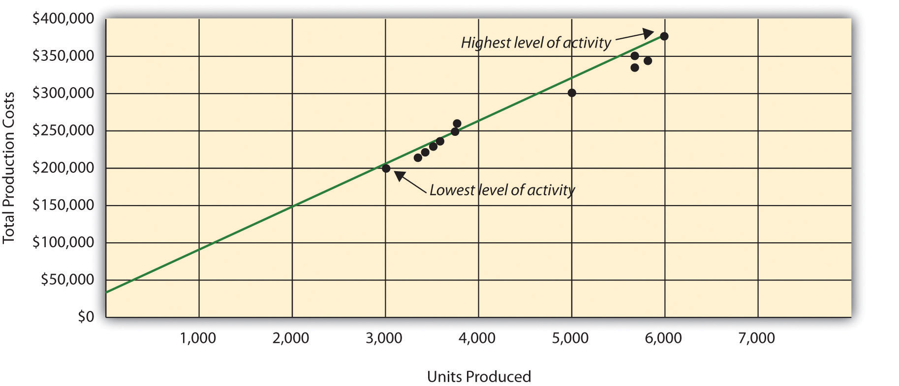
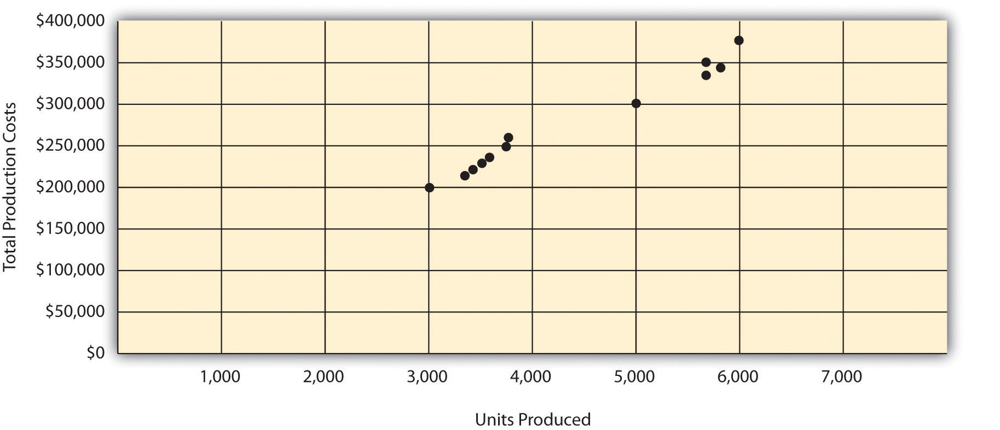
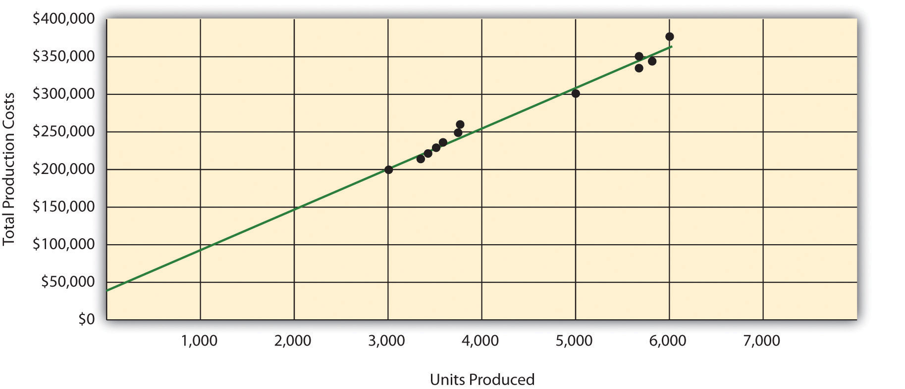
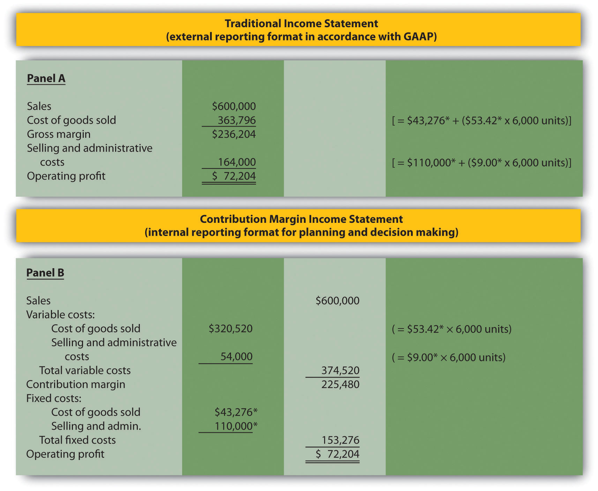
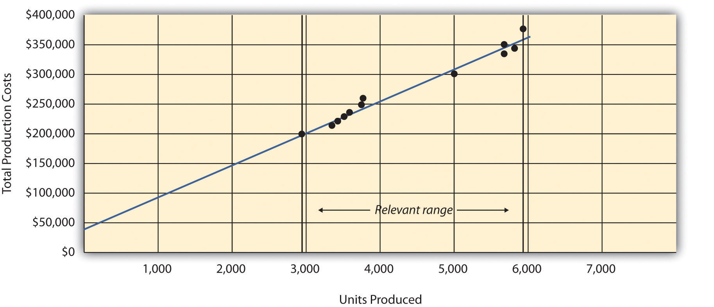
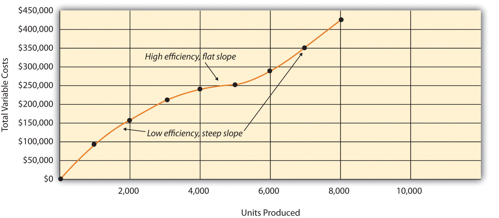

Eric Mendez is the chief financial officer (CFO) of Bikes Unlimited, a company that produces mountain bikes and sells them to retail bicycle stores. Bikes Unlimited obtains the bulk of its parts from outside suppliers and assembles them into the mountain bikes prior to shipment. Last month (June), Bikes Unlimited sold 5,000 mountain bikes for $100 each. Last month’s income statement shows total revenue of $500,000 and operating profit of $50,000:
Susan Wesley is Bikes Unlimited’s cost accountant. Planning for July was completed during June. Senior management is now planning for next month (August) and has asked Eric, the CFO, to obtain some vital financial information for budgeting purposes. Eric arranged a meeting with Susan to discuss the August budget.
| Eric: | As you know, we are in the middle of our planning for next month. The senior management group asked me to make some projections based on expected changes to our sales next month. |
| Susan: | Where do you think sales are headed? |
| Eric: | We expect unit sales to increase 10 percent, perhaps 20 percent if all goes well. |
| Susan: | If sales increase 10 percent, I would expect profit to increase by more than 10 percent since some costs are fixed. |
| Eric: | Sounds reasonable. What’s the next step to get a reasonable estimate of profit? |
| Susan: | First, we have to identify how costs behave with changes in sales and production—whether the costs are variable, fixed, or some other type. Then we can set up the income statement in a contribution margin format and determine if the numbers are within the relevant range. |
| Eric: | Perhaps you and your staff can discuss this and get me some accurate estimates. |
| Susan: | I’ll meet with them tomorrow and should have some information for you within a few days. |
Question: To predict what will happen to profit in the future at Bikes Unlimited, we must understand how costs behave with changes in the number of units sold (sales volume). Some costs will not change at all with a change in sales volume (e.g., monthly rent for the production facility). Some costs will change with a change in sales volume (e.g., materials for the mountain bikes). What are the three cost behavior patterns that help organizations identify which costs will change and which will remain the same with changes in sales volume?
Answer: The three basic cost behavior patterns are known as variable, fixed, and mixed. Each of these cost patterns is described next.
Question: We know that some costs vary with changes in activity. What do we call this type of cost behavior?
Answer: This cost behavior pattern is called a variable cost. A variable costA cost that varies in total with changes in activity and remains constant on a per unit basis with changes in activity. describes a cost that varies in total with changes in volume of activity. The activity in this example is the number of bikes produced and sold. However, the activity can take many different forms depending on the organization. The two most common variable costs are direct materials and direct labor. Other examples include indirect materials and energy costs.
Assume the cost of direct materials (wheels, seats, frames, and so forth) for each bike at Bikes Unlimited is $40. If Bikes Unlimited produces one bike, total variable cost for direct materials amounts to $40. If Bikes Unlimited doubles its production to two bikes, total variable cost for direct materials also doubles to $80. Variable costs typically change in proportion to changes in volume of activity. If volume of activity doubles, total variable costs also double, while the cost per unit remains the same. It is important to note that the term variable refers to what happens to total costs with changes in activity, not to the cost per unit.
Taking it one step further for Bikes Unlimited, let’s consider all variable costs related to production. Assume direct materials, direct labor, and all other variable production costs amount to $60 per unit. Table 5.1 "Variable Cost Behavior for Bikes Unlimited" provides the total and per unit variable costs at three different levels of production, and Figure 5.1 "Total Variable Production Costs for Bikes Unlimited" graphs the relation of total variable costs (y-axis) to units produced (x-axis). Note that the slope of the line represents the variable cost per unit of $60 (slope = change in variable cost ÷ change in units produced).
Table 5.1 Variable Cost Behavior for Bikes Unlimited
| Units Produced | Total Variable Costs | Per Unit Variable Cost |
|---|---|---|
| 1 | $ 60 | $60 |
| 2,000 | 120,000 | 60 |
| 4,000 | 240,000 | 60 |
Figure 5.1 Total Variable Production Costs for Bikes Unlimited

Question: At Bikes Unlimited, it is reasonable to assume that the activity, number of units produced, will affect total variable costs for direct materials and direct labor. However, companies often use a different activity to estimate total variable costs. What types of activities might be used to estimate variable costs?
Answer: The type of activity used to estimate variable costs depends on the cost. For example, a law firm might use the number of labor hours to estimate labor costs. An airline such as American Airlines might use hours of flying time to estimate fuel costs. A mail delivery service such as UPS might use the number of packages processed to estimate labor costs associated with sorting packages. A retail store such as Best Buy might use sales dollars to estimate cost of goods sold.
Variable costs are affected by different activities depending on the organization. The goal is to find the activity that causes the variable cost so that accurate cost estimates can be made.
Question: Costs that vary in total with changes in activity are called variable costs. What do we call costs that remain the same in total with changes in activity?
Answer: This cost behavior pattern is called a fixed cost. A fixed costA cost that remains constant in total with changes in activity and varies on a per unit basis with changes in activity. describes a cost that is fixed (does not change) in total with changes in volume of activity. Assuming the activity is the number of bikes produced and sold, examples of fixed costs include salaried personnel, building rent, and insurance.
Assume Bikes Unlimited pays $8,000 per month in rent for its production facility. In addition, insurance for the same building is $2,000 per month and salaried production personnel are paid $6,000 per month. All other fixed production costs total $4,000. Thus Bikes Unlimited has total fixed costs of $20,000 per month related to its production facility (= $8,000 + $2,000 + $6,000 + $4,000). If only one bike is produced, Bikes Unlimited still must pay $20,000 per month. If 5,000 bikes are produced, Bikes Unlimited still pays $20,000 per month. The fixed costs remain unchanged in total as the level of activity changes.
Question: What happens to fixed costs on a per unit basis as production levels change?
Answer: If Bikes Unlimited only produces one bike, the fixed cost per unit would amount to $20,000 (= $20,000 total fixed costs ÷ 1 bike). If Bikes Unlimited produces two bikes, the fixed cost per unit would be $10,000 (= $20,000 ÷ 2 bikes). As activity increases, the fixed costs are spread out over more units, which results in a lower cost per unit.
Table 5.2 "Fixed Cost Behavior for Bikes Unlimited" provides the total and per unit fixed costs at three different levels of production, and Figure 5.2 "Total Fixed Production Costs for Bikes Unlimited" graphs the relation of total fixed costs (y-axis) to units produced (x-axis). Note that regardless of the activity level, total fixed costs remain the same.
Table 5.2 Fixed Cost Behavior for Bikes Unlimited
| Units Produced | Total Fixed Costs | Per Unit Fixed Cost |
|---|---|---|
| 1 | $20,000 | $20,000 |
| 2,000 | 20,000 | 10 |
| 4,000 | 20,000 | 5 |
Figure 5.2 Total Fixed Production Costs for Bikes Unlimited
Source: Photo courtesy of Simon_sees, http://www.flickr.com/photos/39551170@N02/3696524201/.
United Airlines Struggles to Control Costs
United Airlines is the second largest air carrier in the world. It has hubs in Chicago, Denver, Los Angeles, San Francisco, and New York and flies to 109 destinations in 23 countries. Destinations include Tokyo, London, and Frankfurt.
Back in 2002, United filed for bankruptcy. Industry analysts reported that United had relatively high fixed costs, making it difficult for the company to cut costs quickly in line with its reduction in revenue. A few years later, United emerged from bankruptcy, and in 2010 merged with Continental Airlines. Although financial information was presented separately for each company (United and Continental) in 2010, both companies are now owned by United Continental Holdings, Inc. The following financial information for United Airlines is from the company’s income statement for the year ended December 31, 2010 (amounts are in millions). Review this information carefully. Which costs are likely to be fixed?
Although we cannot identify all fixed costs with certainty, several costs likely fall into this category: salaries (for union employees, such as pilots, flight crews, and mechanics); aircraft fuel (assuming flights are not easily canceled); aircraft rent; and depreciation. These costs total $11.1 billion, or 60 percent of total operating expenses (rounded). Fixed costs are clearly a large component of total operating expenses, which makes it difficult for airline companies like United Airlines to make short-term cuts in expenses when revenue declines.
Source: United Continental, Inc., form 10K for 2010.
Question: Organizations often view fixed costs as either committed or discretionary. What is the difference between these two types of fixed costs?
Answer: A committed fixed costA fixed cost that cannot easily be changed in the short run without having a significant impact on the organization. is a fixed cost that cannot easily be changed in the short run without having a significant impact on the organization. For example, assume Bikes Unlimited has a five-year lease on the company’s production facility, which costs $8,000 per month. This is a committed fixed cost because the lease cannot easily be broken, and the company is committed to using this facility for years to come. Other examples of committed fixed costs include salaried employees with long-term contracts, depreciation on buildings, and insurance.
A discretionary fixed costA fixed cost that can be changed in the short run without having a significant impact on the organization. is a fixed cost that can be changed in the short run without having a significant impact on the organization. For example, assume Bikes Unlimited contributes $10,000 each year toward charitable organizations. Management has the option of changing this amount in the short run without causing a significant impact on the organization. Other examples of discretionary fixed costs include advertising, research and development, and training programs (although an argument can be made that reducing these expenditures could have a significant impact on the company depending on the amount of the cuts).
In general, management looks to cut discretionary fixed costs when sales and profits are declining, since cuts in this area tend not to have as significant an impact on the organization as cutting committed fixed costs. Difficulties arise when struggling organizations go beyond cutting discretionary fixed costs and begin looking at cutting committed fixed costs.
Question: We have now learned about two types of cost behavior patterns—variable costs and fixed costs. However, there is a third type of cost that behaves differently in that both total and per unit costs change with changes in activity. What do we call this type of cost?
Answer: This cost behavior pattern is called a mixed cost. The term mixed costA cost that has a combination of fixed and variable costs. describes a cost that has a mix of fixed and variable costs. For example, assume sales personnel at Bikes Unlimited are paid a total of $10,000 in monthly salary plus a commission of $7 for every bike sold. This is a mixed cost because it has a fixed component of $10,000 per month and a variable component of $7 per unit.
Table 5.3 "Mixed Cost Behavior for Bikes Unlimited" provides the total and per unit fixed costs at three different levels of production, and Figure 5.3 "Total Mixed Sales Compensation Costs for Bikes Unlimited" graphs the relation of total mixed costs (y-axis) to units produced (x-axis). The point at which the line intersects the y-axis represents the total fixed cost ($10,000), and the slope of the line represents the variable cost per unit ($7).
Table 5.3 Mixed Cost Behavior for Bikes Unlimited
| Units Sold | Total Mixed Costs | Per Unit Mixed Cost |
|---|---|---|
| 1 | $10,007 | $10,007.00 |
| 2,000 | 24,000 | 12.00 |
| 4,000 | 38,000 | 9.50 |
Figure 5.3 Total Mixed Sales Compensation Costs for Bikes Unlimited
Because this cost is depicted with a straight line, we can use the equation for a straight line to describe a mixed cost:
or
Y = f + vXwhere
Y = total mixed costs (this is the y-axis in Figure 5.3 "Total Mixed Sales Compensation Costs for Bikes Unlimited") f = total fixed costs v = variable cost per unit X = level of activity (this is the x-axis in Figure 5.3 "Total Mixed Sales Compensation Costs for Bikes Unlimited")For Bikes Unlimited, the mixed cost equation is Y = $10,000 + $7X. If Bikes Unlimited sells 4,000 bikes (X) in one month, the total mixed cost (Y) for sales personnel compensation would be $38,000 [= $10,000 + ($7 × 4,000 units)].
We now introduce two important concepts that must be considered when estimating costs: short term versus long term, and the relevant range.
Question: When identifying cost behavior patterns, we assume that management is using the cost information to make short-term decisions. Why is this short-term decision making assumption so important?
Answer: Variable, fixed, and mixed cost concepts are useful for short-term decision making and therefore apply to a specific period of time. This short-term period will vary depending on the company’s current production capacity and the time required to change capacity. In the long term, all cost behavior patterns will likely change.
For example, suppose Bikes Unlimited’s production capacity is 8,000 units per month, and management plans to expand capacity in two years by renting a new production facility and hiring additional personnel. This is a long-term decision that will change the cost behavior patterns identified earlier. Variable production costs will no longer be $60 per unit, fixed production costs will no longer be $20,000 per month, and mixed sales compensation costs will also change. All these costs will change because the estimates are accurate only in the short term.
Question: Another important concept we use when estimating costs is called the relevant range. What is the relevant range and why is it so important when estimating costs?
Answer: The relevant rangeThe range of activity for which the cost behavior patterns are likely to be accurate. is the range of activity for which cost behavior patterns are likely to be accurate. The variable, fixed, and mixed costs identified for Bikes Unlimited will only be accurate within a certain range of activity. Once the firm goes outside that range, cost estimates are not necessarily accurate and often must be reevaluated and recalculated.
For example, assume Bikes Unlimited’s mixed sales compensation costs of $10,000 per month plus $7 per unit is only valid up to 4,000 units per month. If unit sales increase beyond 4,000 units, management will hire additional salespeople and the total monthly base salary will increase beyond $10,000. Thus the relevant range for this mixed cost is from zero to 4,000 units. Once the company exceeds sales of 4,000 units per month, it is out of the relevant range, and the mixed cost must be recalculated.
We discuss the relevant range concept in more detail later in the chapter. For now, remember that the accuracy of cost behavior patterns is limited to a certain range of activity called the relevant range.
Using Excel to Create Charts
Managers typically use computer applications on a daily basis to perform a variety of functions. For example, they often use Excel to generate tables, graphs, and charts. You could use Excel to create the charts shown in Figure 5.1 "Total Variable Production Costs for Bikes Unlimited", Figure 5.2 "Total Fixed Production Costs for Bikes Unlimited", and Figure 5.3 "Total Mixed Sales Compensation Costs for Bikes Unlimited". Here’s how:
Enter the data. Open a new Excel document and enter the data in two columns: one column for the x-axis (horizontal axis), and one column for the y-axis (vertical axis). Let’s suppose you want to create the chart shown in Figure 5.1 "Total Variable Production Costs for Bikes Unlimited". In that case, the x-axis represents units produced, and the y-axis represents total variable costs. An excerpt from your Excel document would appear as follows:
The Excel document created by following these three steps would look like the one shown in Figure 5.1 "Total Variable Production Costs for Bikes Unlimited".
Question: How do managers use cost behavior patterns to make better decisions?
Answer: Accurately predicting what costs will be in the future can help managers answer several important questions. For example, managers at Bikes Unlimited might ask the following:
The only way to accurately predict costs is to understand how costs behave given changes in activity. To make good decisions, managers must know how costs are structured (fixed, variable, or mixed). The next section explains how to estimate fixed and variable costs, and how to identify the fixed and variable components of mixed costs.
Budget Cuts at an Elementary School District
A school district outside Sacramento, California, was faced with making budget cuts because of a reduction in state funding. To reduce costs, the school district’s administration decided to consider closing one of the smaller elementary schools in the district. According to an initial estimate, closing this school would reduce costs by $500,000 to $1,000,000 per year. However, further analysis identified only $100,000 to $150,000 in cost savings.
Why did the analysis yield lower savings than the initial estimate? Most of the costs were committed fixed costs (e.g., teachers’ salaries and benefits) and could not be eliminated in the short term. In fact, teachers and students at the school being considered for closure were to be moved to other schools in the district, and so no savings on teachers’ salaries and benefits would result. The only real short-term cost savings would be in not having to maintain the classrooms, computer lab, and library (nonunion employees would be let go) and in utilities (heat and air conditioning would be turned off).
The school district ultimately decided not to close the school because of the large committed fixed costs involved, as well as a lack of community support, and budget cuts were made in other areas throughout the district.
Sierra Company is trying to identify the behavior of the three costs shown in the following table. The following cost information is provided for six months. Calculate the cost per unit, and then identify how each cost behaves (fixed, variable, or mixed). Explain your answers.
| Cost 1 | Cost 2 | Cost 3 | |||||
|---|---|---|---|---|---|---|---|
| Month | Units Produced | Total Costs | Cost per Unit | Total Costs | Cost per Unit | Total Costs | Cost per Unit |
| 1 | 50 | $100 | $2.00 | $100 | $2.00 | $100 | $2.00 |
| 2 | 100 | 200 | 2.00 | 100 | 1.00 | 150 | 1.50 |
| 3 | 150 | 300 | _____ | 100 | _____ | 200 | _____ |
| 4 | 200 | 400 | _____ | 100 | _____ | 250 | _____ |
| 5 | 250 | 500 | _____ | 100 | _____ | 300 | _____ |
| 6 | 300 | 600 | _____ | 100 | _____ | 350 | _____ |
Solution to Review Problem 5.1
As shown in the following table, cost 1 is a variable cost because as the number of units produced changes, total costs change (in proportion to changes in activity) and per unit cost remains the same. Cost 2 is a fixed cost because as the number of units produced changes, total costs remain the same and per unit costs change. Cost 3 is a mixed cost because as the number of units produced changes, total cost changes (but not in proportion to changes in activity) and per unit cost changes.
| Cost 1 | Cost 2 | Cost 3 | |||||
|---|---|---|---|---|---|---|---|
| Month | Units Produced | Total Costs | Cost per Unit | Total Costs | Cost per Unit* | Total Costs | Cost per Unit* |
| 1 | 50 | $100 | $2.00 | $100 | $2.00 | $100 | $2.00 |
| 2 | 100 | 200 | 2.00 | 100 | 1.00 | 150 | 1.50 |
| 3 | 150 | 300 | 2.00 | 100 | 0.67 | 200 | 1.33 |
| 4 | 200 | 400 | 2.00 | 100 | 0.50 | 250 | 1.25 |
| 5 | 250 | 500 | 2.00 | 100 | 0.40 | 300 | 1.20 |
| 6 | 300 | 600 | 2.00 | 100 | 0.33 | 350 | 1.17 |
| *Rounded. | |||||||
Question: Recall the conversation that Eric (CFO) and Susan (cost accountant) had about Bikes Unlimited’s budget for the next month, which is August. The company expects to increase sales by 10 to 20 percent, and Susan has been asked to estimate profit for August given this expected increase. Although examples of variable and fixed costs were provided in the previous sections, companies typically do not know exactly how much of their costs are fixed and how much are variable. (Financial accounting systems do not normally sort costs as fixed or variable.) Thus organizations must estimate their fixed and variable costs. What methods do organizations use to estimate fixed and variable costs?
Answer: Four common approaches are used to estimate fixed and variable costs:
All four methods are described next. The goal of each cost estimation method is to estimate fixed and variable costs and to describe this estimate in the form of Y = f + vX. That is, Total mixed cost = Total fixed cost + (Unit variable cost × Number of units). Note that the estimates presented next for Bikes Unlimited may differ from the dollar amounts used previously, which were for illustrative purposes only.
Question: The account analysisA method of cost analysis that requires a review of accounts by an experienced employee or group of employees to determine whether the costs in each account are fixed or variable. approach is perhaps the most common starting point for estimating fixed and variable costs. How is the account analysis approach used to estimate fixed and variable costs?
Answer: This approach requires that an experienced employee or group of employees review the appropriate accounts and determine whether the costs in each account are fixed or variable. Totaling all costs identified as fixed provides the estimate of total fixed costs. To determine the variable cost per unit, all costs identified as variable are totaled and divided by the measure of activity (units produced is the measure of activity for Bikes Unlimited).
Let’s look at the account analysis approach using Bikes Unlimited as an example. Susan (the cost accountant) asked the financial accounting department to provide cost information for the production department for the month of June (July information is not yet available). Because the financial accounting department tracks information by department, it is able to produce this information. The production department information for June is as follows:
Susan reviewed this cost information with the production manager, Indira Bingham, who has worked as production manager at Bikes Unlimited for several years. After careful review, Indira and Susan came up with the following breakdown of variable and fixed costs for June:
Total fixed cost is estimated to be $30,000, and variable cost per unit is estimated to be $52 (= $260,000 ÷ 5,000 units produced). Remember, the goal is to describe the mixed costs in the equation form Y = f + vX. Thus the mixed cost equation used to estimate future production costs is
Y = $30,000 + $52XNow Susan can estimate monthly production costs (Y) if she knows how many units Bikes Unlimited plans to produce (X). For example, if Bikes Unlimited plans to produce 6,000 units for a particular month (a 20 percent increase over June) and this level of activity is within the relevant range, total production costs should be approximately $342,000 [= $30,000 + ($52 × 6,000 units)].
Question: Why should Susan be careful using historical data for one month (June) to estimate future costs?
Answer: June may not be a typical month for Bikes Unlimited. For example, utility costs may be low relative to those in the winter months, and production costs may be relatively high as the company prepares for increased demand in July and August. This might result in a lower materials cost per unit from quantity discounts offered by suppliers. To smooth out these fluctuations, companies often use data from the past quarter or past year to estimate costs.
Alta Production, Inc., is using the account analysis approach to identify the behavior of production costs for a month in which it produced 350 units. The production manager was asked to review these costs and provide her best guess as to how they should be categorized. She responded with the following information:
Solution to Review Problem 5.2
Using the previous equation, simply substitute 400 units for X, as follows:
Thus total production costs are expected to be $578,428 for next month.
Question: Another approach to identifying fixed and variable costs for cost estimation purposes is the high-low methodA method of cost analysis that uses the high and low activity data points to estimate fixed and variable costs.. Accountants who use this approach are looking for a quick and easy way to estimate costs, and will follow up their analysis with other more accurate techniques. How is the high-low method used to estimate fixed and variable costs?
Answer: The high-low method uses historical information from several reporting periods to estimate costs. Assume Susan Wesley obtains monthly production cost information from the financial accounting department for the last 12 months. This information appears in Table 5.4 "Monthly Production Costs for Bikes Unlimited".
Table 5.4 Monthly Production Costs for Bikes Unlimited
| Reporting Period (Month) | Total Production Costs | Level of Activity (Units Produced) |
|---|---|---|
| July | $230,000 | 3,500 |
| August | 250,000 | 3,750 |
| September | 260,000 | 3,800 |
| October | 220,000 | 3,400 |
| November | 340,000 | 5,800 |
| December | 330,000 | 5,500 |
| January | 200,000 | 2,900 |
| February | 210,000 | 3,300 |
| March | 240,000 | 3,600 |
| April | 380,000 | 5,900 |
| May | 350,000 | 5,600 |
| June | 290,000 | 5,000 |
All of the data points from Table 5.4 "Monthly Production Costs for Bikes Unlimited" are plotted on the graph shown in Figure 5.4 "Estimated Total Mixed Production Costs for Bikes Unlimited: High-Low Method". Although a graph is not required using the high-low method, it is a helpful visual tool. Susan then draws a straight line using the high (April) and low (January) activity levels from these data. The goal of the high-low method is to describe this line mathematically in the form of an equation stated as Y = f + vX, which requires calculating both the total fixed costs amount (f) and per unit variable cost amount (v). Four steps are required to achieve this using the high-low method:
Step 1. Identify the high and low activity levels from the data set.
Step 2. Calculate the variable cost per unit (v).
Step 3. Calculate the total fixed cost (f).
Step 4. State the results in equation form Y = f + vX.
Figure 5.4 Estimated Total Mixed Production Costs for Bikes Unlimited: High-Low Method

Question: How are the four steps of the high-low method used to estimate total fixed costs and per unit variable cost?
Answer: Each of the four steps is described next.
Step 1. Identify the high and low activity levels from the data set.
The highest level of activity (level of production) occurred in the month of April (5,900 units; $380,000 production costs), and the lowest level of activity occurred in the month of January (2,900 units; $200,000 production costs). Note that we are identifying the high and low activity levels rather than the high and low dollar levels—choosing the high and low dollar levels can result in incorrect high and low points.
Step 2. Calculate the variable cost per unit (v).
Because the slope of the line shown in Figure 5.4 "Estimated Total Mixed Production Costs for Bikes Unlimited: High-Low Method" represents the variable cost per unit, the goal here is to calculate the slope of the line using the high and low points identified in step 1 (the slope calculation is often referred to as “rise over run” in math courses). The calculation of the variable cost per unit for Bikes Unlimited is shown as follows:
Step 3. Calculate the total fixed cost (f).
After completing step 2, the equation to describe the line is partially complete and stated as Y = f + $60X. The goal of step 3 is to calculate a value for total fixed cost (f). Simply select either the high or low activity level, and fill in the data to solve for f (total fixed costs), as shown.
Using the low activity level of 2,900 units and $200,000,
Thus total fixed costs total $26,000. (Try this using the high activity level of 5,900 units and $380,000. You will get the same result as long as the per unit variable cost is not rounded.)
Step 4. State the results in equation form Y = f + vX.
We know from step 2 that the variable cost per unit is $60, and from step 3 that total fixed cost is $26,000. Thus we can state the equation used to estimate total costs as
Y = $26,000 + $60XNow it is possible to estimate total production costs given a certain level of production (X). For example, if Bikes Unlimited expects to produce 6,000 units during August, total production costs are estimated to be $386,000:
Question: Although the high-low method is relatively simple, it does have a potentially significant weakness. What is the potential weakness in using the high-low method?
Answer: In reviewing Figure 5.4 "Estimated Total Mixed Production Costs for Bikes Unlimited: High-Low Method", you will notice that this approach only considers the high and low activity levels in establishing an estimate of fixed and variable costs. The high and low data points may not represent the data set as a whole, and using these points can result in distorted estimates.
For example, the $380,000 in production costs incurred in April may be higher than normal because several production machines broke down resulting in costly repairs. Or perhaps several key employees left the company, resulting in higher than normal labor costs for the month because the remaining employees were paid overtime. Cost accountants will often throw out the high and low points for this reason and use the next highest and lowest points to perform this analysis. While the high-low method is most often used as a quick and easy way to estimate fixed and variable costs, other more sophisticated methods are most often used to refine the estimates developed from the high-low method.
Alta Production, Inc., reported the following production costs for the 12 months January through December. (This is the same company featured in Note 5.15 "Review Problem 5.2".)
| Reporting Period (Month) | Total Production Costs | Level of Activity (Units Produced) |
| January | $460,000 | 300 |
| February | 300,000 | 220 |
| March | 480,000 | 330 |
| April | 550,000 | 390 |
| May | 570,000 | 410 |
| June | 310,000 | 240 |
| July | 440,000 | 290 |
| August | 455,000 | 320 |
| September | 530,000 | 380 |
| October | 250,000 | 150 |
| November | 700,000 | 450 |
| December | 490,000 | 350 |
Solution to Review Problem 5.3
The four steps are as follows:
Step 1. Identify the high and low activity levels from the data set.
The highest level of activity occurred in November (450 units; $700,000 production costs), and the lowest level of activity occurred in October (150 units; $250,000 production costs).
Step 2. Calculate the variable cost per unit (v).
Step 3. Calculate the total fixed cost (f).
After completing step 2, the equation to describe the line is partially complete and stated as Y = f + $1,500X. To calculate total fixed costs, simply select either the high or low activity level, and fill in the data to solve for f (total fixed costs), as shown.
Using the high activity level,
Thus total fixed cost is $25,000.
Step 4. State the results in equation form Y = f + vX.
We know from step 2 that the variable cost per unit is $1,500, and from step 3 that total fixed costs are $25,000. Thus the equation used to estimate total production costs is
Using the equation from part 1, simply substitute 400 units for X, as follows:
Thus total production costs are expected to be $625,000 for next month.
Question: Many organizations prefer to use the scattergraph methodA method of cost analysis that uses a set of data points to estimate fixed and variable costs. to estimate costs. Accountants who use this approach are looking for an approach that does not simply use the highest and lowest data points. How is the scattergraph method used to estimate fixed and variable costs?
Answer: The scattergraph method considers all data points, not just the highest and lowest levels of activity. Again, the goal is to develop an estimate of fixed and variable costs stated in equation form Y = f + vX. Using the same data for Bikes Unlimited shown in Table 5.4 "Monthly Production Costs for Bikes Unlimited", we will follow the five steps associated with the scattergraph method:
Step 1. Plot the data points for each period on a graph.
Step 2. Visually fit a line to the data points and be sure the line touches one data point.
Step 3. Estimate the total fixed costs (f).
Step 4. Calculate the variable cost per unit (v).
Step 5. State the results in equation form Y = f + vX.
Question: How are the five steps of the scattergraph method used to estimate total fixed costs and per unit variable cost?
Answer: Each of the five steps is described next.
Step 1. Plot the data points for each period on a graph.
This step requires that each data point be plotted on a graph. The x-axis (horizontal axis) reflects the level of activity (units produced in this example), and the y-axis (vertical axis) reflects the total production cost. Figure 5.5 "Scattergraph of Total Mixed Production Costs for Bikes Unlimited" shows a scattergraph for Bikes Unlimited using the data points for 12 months, July through June.
Figure 5.5 Scattergraph of Total Mixed Production Costs for Bikes Unlimited

Step 2. Visually fit a line to the data points and be sure the line touches one data point.
Once the data points are plotted as described in step 1, draw a line through the points touching one data point and extending to the y-axis. The goal here is to minimize the distance from the data points to the line (i.e., to make the line as close to the data points as possible). Figure 5.6 "Estimated Total Mixed Production Costs for Bikes Unlimited: Scattergraph Method" shows the line through the data points. Notice that the line hits the data point for July (3,500 units produced and $230,000 total cost).
Figure 5.6 Estimated Total Mixed Production Costs for Bikes Unlimited: Scattergraph Method

Step 3. Estimate the total fixed costs (f).
The total fixed costs are simply the point at which the line drawn in step 2 meets the y-axis. This is often called the y-intercept. Remember, the line meets the y-axis when the activity level (units produced in this example) is zero. Fixed costs remain the same in total regardless of level of production, and variable costs change in total with changes in levels of production. Since variable costs are zero when no units are produced, the costs reflected on the graph at the y-intercept must represent total fixed costs. The graph in Figure 5.6 "Estimated Total Mixed Production Costs for Bikes Unlimited: Scattergraph Method" indicates total fixed costs of approximately $45,000. (Note that the y-intercept will always be an approximation.)
Step 4. Calculate the variable cost per unit (v).
After completing step 3, the equation to describe the line is partially complete and stated as Y = $45,000 + vX. The goal of step 4 is to calculate a value for variable cost per unit (v). Simply use the data point the line intersects (July: 3,500 units produced and $230,000 total cost), and fill in the data to solve for v (variable cost per unit) as follows:
Thus variable cost per unit is $52.86.
Step 5. State the results in equation form Y = f + vX.
We know from step 3 that the total fixed costs are $45,000, and from step 4 that the variable cost per unit is $52.86. Thus the equation used to estimate total costs looks like this:
Y = $45,000 + $52.86XNow it is possible to estimate total production costs given a certain level of production (X). For example, if Bikes Unlimited expects to produce 6,000 units during August, total production costs are estimated to be $362,160:
Question: Remember that the key weakness of the high-low method discussed previously is that it considers only two data points in estimating fixed and variable costs. How does the scattergraph method mitigate this weakness?
Answer: The scattergraph method mitigates this weakness by considering all data points in estimating fixed and variable costs. The scattergraph method gives us an opportunity to review all data points in the data set when we plot these data points in a graph in step 1. If certain data points seem unusual (statistics books often call these points outliers), we can exclude them from the data set when drawing the best-fitting line. In fact, many organizations use a scattergraph to identify outliers and then use regression analysis to estimate the cost equation Y = f + vX. We discuss regression analysis in the next section.
Although the scattergraph method tends to yield more accurate results than the high-low method, the final cost equation is still based on estimates. The line is drawn using our best judgment and a bit of guesswork, and the resulting y-intercept (fixed cost estimate) is based on this line. This approach is not an exact science! However, the next approach to estimating fixed and variable costs—regression analysis—uses mathematical equations to find the best-fitting line.
Alta Production, Inc., reported the following production costs for the 12 months January through December. (These are the same data presented in Note 5.17 "Review Problem 5.3".)
| Reporting Period (Month) | Total Production Costs | Level of Activity (Units Produced) |
| January | $460,000 | 300 |
| February | 300,000 | 220 |
| March | 480,000 | 330 |
| April | 550,000 | 390 |
| May | 570,000 | 410 |
| June | 310,000 | 240 |
| July | 440,000 | 290 |
| August | 455,000 | 320 |
| September | 530,000 | 380 |
| October | 250,000 | 150 |
| November | 700,000 | 450 |
| December | 490,000 | 350 |
Solution to Review Problem 5.4
The five steps are as follows:
Step 1. Plot the data points for each period on a graph.
Step 2. Visually fit a line to the data points, and be sure the line touches one data point.
Step 3. Estimate the total fixed costs (f).
The y-intercept represents total fixed costs. This is where the line meets the y-axis. Total fixed costs in the graph appear to be approximately $5,000. You will likely get a different answer because the answer depends on the line that you visually fit to the data points. Remember you must draw the line through one data point. The line intersects the data point for March ($480,000 production costs; 330 units produced). This will be used in step 4.
Step 4. Calculate the variable cost per unit (v).
After completing step 3, the equation to describe the line is partially complete and stated as Y = $5,000 + vX. The goal of this step is to calculate a value for variable cost per unit (v). Use the data point the line intersects (for March, 330 units produced and $480,000 total costs), and fill in the data to solve for v (variable cost per unit):
Step 5. State the results in equation form Y = f + vX.
We know from step 3 that the total fixed costs are $5,000, and from step 4 that variable cost per unit is $1,439.39. Thus the equation used to estimate total production costs is stated as:
It is evident from this information that this company has very little in fixed costs and relatively high variable costs. This is indicative of a company that uses a high level of labor and materials (both variable costs) and a low level of machinery (typically a fixed cost through depreciation or lease costs).
Using the equation, simply substitute 400 units for X, as follows:
Thus total production costs are expected to be $580,756 for next month.
Question: Regression analysis is similar to the scattergraph approach in that both fit a straight line to a set of data points to estimate fixed and variable costs. How does regression analysis differ from the scattergraph method for estimating costs?
Answer: Regression analysisA method of cost analysis that uses a series of mathematical equations to estimate fixed and variable costs; typically done using computer software. uses a series of mathematical equations to find the best possible fit of the line to the data points and thus tends to provide more accurate results than the scattergraph approach. Rather than running these computations by hand, most companies use computer software, such as Excel, to perform regression analysis. Using the data for Bikes Unlimited shown back in Table 5.4 "Monthly Production Costs for Bikes Unlimited", regression analysis in Excel provides the following output. (This is a small excerpt of the output; see the appendix to this chapter for an explanation of how to use Excel to perform regression analysis.)
| Coefficients | |
| y-intercept | 43,276 |
| x variable | 53.42 |
Thus the equation used to estimate total production costs for Bikes Unlimited looks like this:
Y = $43,276 + $53.42XNow it is possible to estimate total production costs given a certain level of production (X). For example, if Bikes Unlimited expects to produce 6,000 units during August, total production costs are estimated to be $363,796:
Regression analysis tends to yield the most accurate estimate of fixed and variable costs, assuming there are no unusual data points in the data set. It is important to review the data set first—perhaps in the form of a scattergraph—to confirm that no outliers exist.
Alta Production, Inc., reported the following production costs for the 12 months January through December. (These are the same data that appear in Note 5.17 "Review Problem 5.3" and Note 5.19 "Review Problem 5.4".)
| Reporting Period (Month) | Total Production Cost | Level of Activity (Units Produced) |
| January | $460,000 | 300 |
| February | 300,000 | 220 |
| March | 480,000 | 330 |
| April | 550,000 | 390 |
| May | 570,000 | 410 |
| June | 310,000 | 240 |
| July | 440,000 | 290 |
| August | 455,000 | 320 |
| September | 530,000 | 380 |
| October | 250,000 | 150 |
| November | 700,000 | 450 |
| December | 490,000 | 350 |
Regression analysis performed using Excel resulted in the following output:
| Coefficients | |
| y-intercept | 703 |
| x variable | 1,442.97 |
Solution to Review Problem 5.5
The cost equation using the data from regression analysis is:
Using the equation, simply substitute 400 units for X, as follows:
Thus total production costs are expected to be $577,891 for next month.
Question: You are now able to create the cost equation Y = f + vX to estimate costs using four approaches. What does the cost equation look like for each approach at Bikes Unlimited?
Answer: The results of these four approaches for Bikes Unlimited are summarized as follows:
Question: We have seen that different methods yield different results, so which method should be used?
Answer: Regression analysis tends to be most accurate because it provides a cost equation that best fits the line to the data points. However, the goal of most companies is to get close—the results do not need to be perfect. Some could reasonably argue that the account analysis approach is best because it relies on the knowledge of those who are familiar with the costs involved.
At Bikes Unlimited, Eric (CFO) and Susan (cost accountant) met several days later. After consulting with her staff, Susan agreed that regression analysis was the best approach to use in estimating total production costs (keep in mind nothing has been done yet with selling and administrative expenses). Account analysis was ruled out because no one on the accounting staff had been with the company long enough to review the accounts and determine which costs were variable, fixed, or mixed. The high-low method was ruled out because it only uses two data points and Eric would prefer a more accurate estimate. Susan did request that her staff prepare a scattergraph and review it for any unusual data points before performing regression analysis. Based on the scattergraph prepared, all agreed that the data was relatively uniform and no outlying data points were identified.
| Susan: | My staff has been working hard to determine what will happen to profit if sales volume increases. So far, we’ve been able to identify cost behavior patterns for production costs, and we’re currently working on the cost behavior patterns for selling and administrative expenses. |
| Eric: | What do you have for production costs? |
| Susan: | The portion of production costs that are fixed—that won’t change with changes in production and sales—totals $43,276. The portion of production costs that are variable—that vary with changes in production and sales—totals $53.42 per unit. |
| Eric: | When do you expect to have further information for the selling and administrative costs? |
| Susan: | We should have those results by the end of the day tomorrow. At that point, I’ll put together an income statement projecting profit for August. |
| Eric: | Sounds good. Let’s meet when you have the information ready. |
Use the solutions you prepared for Note 5.15 "Review Problem 5.2", Note 5.17 "Review Problem 5.3", Note 5.19 "Review Problem 5.4", and Note 5.21 "Review Problem 5.5" to do the following:
Solution to Review Problem 5.6
The cost equations for each of the four methods used in Note 5.15 "Review Problem 5.2", Note 5.17 "Review Problem 5.3", Note 5.19 "Review Problem 5.4", and Note 5.21 "Review Problem 5.5" are shown here. Each of these cost equations was created using the same historical production cost data for Alta Production, Inc. The goal for you as a student is to understand how to develop a cost equation that will help in estimating costs for the future (based on past information).
Total production costs assuming 400 units will be produced are calculated for each method given. Note that the equations presented previously are used for these calculations.
Account analysis
High-low method
Scattergraph method
Regression analysis
The account analysis ($578,428), scattergraph method ($580,756), and regression analysis ($577,891) all yield similar estimated production costs. The high-low method varies significantly from the other three approaches, likely because only two data points are used to estimate unit variable cost and total fixed costs.
After further work with her staff, Susan was able to break down the selling and administrative costs into their variable and fixed components. (This process is the same as the one we discussed earlier for production costs.) Susan then established the cost equations shown in Table 5.5 "Cost Equations for Bikes Unlimited".
Table 5.5 Cost Equations for Bikes Unlimited
| Production costs | Y = $43,276 + $53.42X |
| Selling and administrative costs | Y = $110,000 + $9.00X |
Question: The challenge now is to organize this information in a way that is helpful to management—specifically, to Eric Mendez. The traditional income statement format used for external financial reporting simply breaks costs down by functional area: cost of goods sold and selling and administrative costs. It does not show fixed and variable costs. Panel A of Figure 5.7 "Traditional and Contribution Margin Income Statements for Bikes Unlimited" illustrates the traditional format. (We defer consideration of income taxes to the end of Chapter 6 "How Is Cost-Volume-Profit Analysis Used for Decision Making?".) How can this information be presented in an income statement that shows fixed and variable costs separately?
Answer: Another income statement format, called the contribution margin income statementAn income statement used for internal reporting that shows fixed and variable cost information., shows the fixed and variable components of cost information. This type of statement appears in panel B of Figure 5.7 "Traditional and Contribution Margin Income Statements for Bikes Unlimited". Note that operating profit is the same in both statements, but the organization of data differs. The contribution margin income statement organizes the data in a way that makes it easier for management to assess how changes in production and sales will affect operating profit. The contribution marginSales revenue left over after deducting variable costs from sales. represents sales revenue left over after deducting variable costs from sales. It is the amount remaining that will contribute to covering fixed costs and to operating profit (hence, the name contribution margin).
Eric indicated that sales volume in August could increase by 20 percent over sales in June of 5,000 units, which would increase unit sales to 6,000 units [= 5,000 units + (5,000 × 20 percent)], and he asked Susan to come up with projected profit for August. Eric also mentioned that the sales price would remain the same at $100 per unit. Using this information and the cost estimate equations in Table 5.5 "Cost Equations for Bikes Unlimited", Susan prepared the contribution margin income statement in panel B of Figure 5.7 "Traditional and Contribution Margin Income Statements for Bikes Unlimited". Assume for now that 6,000 units is just within the relevant range for Bikes Unlimited. (We will discuss this assumption later in the chapter.)
Figure 5.7 Traditional and Contribution Margin Income Statements for Bikes Unlimited
The contribution margin income statement shown in panel B of Figure 5.7 "Traditional and Contribution Margin Income Statements for Bikes Unlimited" clearly indicates which costs are variable and which are fixed. Recall that the variable cost per unit remains constant, and variable costs in total change in proportion to changes in activity. Because 6,000 units are expected to be sold in August, total variable costs are calculated by multiplying 6,000 units by the cost per unit ($53.42 per unit for cost of goods sold, and $9.00 per unit for selling and administrative costs). Thus total variable cost of goods sold is $320,520, and total variable selling and administrative costs are $54,000. These two amounts are combined to calculate total variable costs of $374,520, as shown in panel B of Figure 5.7 "Traditional and Contribution Margin Income Statements for Bikes Unlimited".
The contribution margin of $225,480 represents the sales revenue left over after deducting variable costs from sales ($225,480 = $600,000 − $374,520). It is the amount remaining that will contribute to covering fixed costs and to operating profit.
Recall that total fixed costs remain constant regardless of the level of activity. Thus fixed cost of goods sold remains at $43,276, and fixed selling and administrative costs stay at $110,000. This holds true at both the 5,000 unit level of activity for June, and the 6,000 unit level of activity projected for August. Total fixed costs of $153,276 (= $43,276 + $110,000) are deducted from the contribution margin to calculate operating profit of $72,204.
Armed with this information, Susan meets with Eric the next day. Refer to panel B of Figure 5.7 "Traditional and Contribution Margin Income Statements for Bikes Unlimited" as you read Susan’s comments about the contribution margin income statement.
| Susan: | Eric, I have some numbers for you. My projection for August is complete, and I expect profit to be approximately $72,000 if sales volume increases 20 percent. |
| Eric: | Excellent! You were correct in figuring that profit would increase at a higher rate than sales because of our fixed costs. |
| Susan: | Here’s a copy of our projected income for August. This income statement format provides the variable and fixed costs. As you can see, our monthly fixed costs total approximately $153,000. Now that we have this information, we can easily make projections for different scenarios. |
| Eric: | This will be very helpful in making projections for future months. I’ll take your August projections to the management group this afternoon. Thanks for your help! |
Costs at Lowe’s Companies, Inc.
Lowe’s is the world’s second largest home improvement retailer with more than 1,700 stores in the United States, Canada, and Mexico. The company has 234,000 employees. The following financial information is from Lowe’s income statement for the year ended January 28, 2011 (amounts are in millions). Which of the company’s costs are likely to be variable?
Variable costs probably include cost of sales (the cost of goods sold) and a portion of selling and general and administrative costs (e.g., the cost of hourly labor). Cost of sales alone represents 65 percent of net sales (rounded). Retail companies like Lowe’s tend to have higher variable costs than manufacturing companies like General Motors and Boeing.
Source: Lowe’s Web site (http://www.lowes.com).
Last month, Alta Production, Inc., sold its product for $2,500 per unit. Fixed production costs were $3,000, and variable production costs amounted to $1,400 per unit. Fixed selling and administrative costs totaled $50,000, and variable selling and administrative costs amounted to $200 per unit. Alta Production produced and sold 400 units last month.
Prepare a traditional income statement and a contribution margin income statement for Alta Production. Use Figure 5.7 "Traditional and Contribution Margin Income Statements for Bikes Unlimited" as a guide.
Solution to Review Problem 5.7
*Given.
Question: Bikes Unlimited is making an important assumption in estimating fixed and variable costs. What is this important assumption and why might it be misleading?
Answer: The assumption is that total fixed costs and per unit variable costs will always be at the levels shown in Table 5.5 "Cost Equations for Bikes Unlimited" regardless of the level of production. This will not necessarily hold true under all circumstances.
For example, let’s say Bikes Unlimited picks up a large contract with a customer that requires producing an additional 30,000 units per month. Do you think the cost equations in Table 5.5 "Cost Equations for Bikes Unlimited" would lead to accurate cost estimates? Probably not, because additional fixed costs would be incurred for facilities, salaried personnel, and other areas. Variable cost per unit would likely change also since additional direct labor would be required (either through overtime, which requires overtime pay, or by hiring more employees who are less efficient as they learn the process), and the volume of parts purchased from suppliers would increase, perhaps leading to reductions in per unit costs due to volume discounts for the parts.
As defined earlier, the relevant range is a term used to describe the range of activity (units of production in this example) for which cost behavior patterns are likely to be accurate. Because the historical data used to create these equations for Bikes Unlimited ranges from a low of 2,900 units in January to a high of 5,900 units in April (see Table 5.4 "Monthly Production Costs for Bikes Unlimited"), management would investigate costs further when production levels fall outside of this range. The relevant range for total production costs at Bikes Unlimited is shown in Figure 5.8 "Relevant Range for Total Production Costs at Bikes Unlimited". It is up to the cost accountant to determine the relevant range and make clear to management that estimates being made for activity outside of the relevant range must be analyzed carefully for accuracy.
Figure 5.8 Relevant Range for Total Production Costs at Bikes Unlimited
Recall that Bikes Unlimited estimated costs based on projected sales of 6,000 units for the month of August. Although this is slightly higher than the highest sales of 5,900 units in April, Susan (cost accountant) determined that Bikes Unlimited had the production capacity to produce 6,000 units without significantly affecting total fixed costs or per unit variable costs. Thus she determined that a sales level of 6,000 units was still within the relevant range. However, Susan also made Eric (CFO) aware that Bikes Unlimited was quickly approaching full capacity. If sales were expected to increase in the future, the company would have to increase capacity, and cost estimates would have to be revised.
Question: Another important assumption being made by Bikes Unlimited is that all costs behave in a linear manner. Variable, fixed, and mixed costs are all described and shown as a straight line. However, many costs are not linear and often take on a nonlinear pattern. Why do some costs behave in a nonlinear way?
Answer: Assume the pattern shown in Figure 5.9 "Nonlinear Variable Costs" is for total variable production costs. Consider this: Have you ever worked a job where you were very slow at first but improved rapidly with experience? If a company produces just a few units each month, workers (direct labor) do not gain the experience needed to work efficiently and may waste time and materials. This has the effect of driving up the per unit variable cost. Recall that the slope of the line represents the unit cost; thus, when the unit cost increases, so does the slope. If the company produces more units each month, workers gain experience resulting in improved efficiency, and the per unit cost decreases (both in materials and labor). This causes the total cost line to flatten out a bit as the slope decreases. This is fine until the company starts to reach its limit in how much it can produce (called capacity). Now the company must hire additional inexperienced employees or pay its current employees overtime, which once again drives up the cost per unit. Thus the slope begins to increase.
Figure 5.9 Nonlinear Variable Costs
Although this is probably a more accurate description of how variable costs actually behave for most companies, it is much simpler to describe and estimate costs if you assume they are linear. As long as the relevant range is clearly identified, most companies can reasonably use the linearity assumption to estimate costs.
Two important assumptions must be considered when estimating costs using the methods described in this chapter.
Both assumptions are reasonable as long as the relevant range is clearly identified, and the linearity assumption does not significantly distort the resulting cost estimate.
Solution to Review Problem 5.8
Question: Regression analysis is often performed to estimate fixed and variable costs. Many different software packages have the capability of performing regression analysis, including Excel. This appendix provides a basic illustration of how to use Excel to perform regression analysis. Statistics courses cover this topic in more depth. How is regression analysis used to estimate fixed and variable costs?
Answer: As noted in the chapter, regression analysis uses a series of mathematical equations to find the best possible fit of the line to the data points. For the purposes of this chapter, the end goal of regression analysis is to estimate fixed and variable costs, which are described in the equation form of Y = f + vX. Recall that the following Excel output was provided earlier in the chapter based on the data presented in Table 5.4 "Monthly Production Costs for Bikes Unlimited" for Bikes Unlimited.
| Coefficients | |
| y-intercept | 43,276 |
| x variable | 53.42 |
The resulting equation to estimate production costs is Y = $43,276 + $53.42X. We now describe the steps to be performed in Excel to get this equation.
Step 1. Confirm that the Data Analysis package is installed.
Go to the Data tab on the top menu bar and look for Data Analysis. If Data Analysis appears, you are ready to perform regression analysis. If Data Analysis does not appear, go to the help button (denoted as a question mark in the upper right-hand corner of the screen) and type Analysis ToolPak. Look for the Load the Analysis ToolPak option and follow the instructions given.
Step 2. Enter the data in the spreadsheet.
Using a new Excel spreadsheet, enter the data points in two columns. The monthly data in Table 5.4 "Monthly Production Costs for Bikes Unlimited" includes Total Production Costs and Units Produced. Thus use one column (column A) to enter Total Production Costs data and another column (column B) to enter Units Produced data.
Step 3. Run the regression analysis.
Using the same spreadsheet set up in step 2, select Data, Data Analysis, and Regression. A box appears that requires the input of several items needed to perform regression. Input Y Range requires that you highlight the y-axis data, including the heading (cells B1 through B13 in the example shown in step 2). Input X Range requires that you highlight the x-axis data, including the heading (cells C1 through C13 in the example shown in step 2). Check the Labels box; this indicates that the top of each column has a heading (B1 and C1). Select New Workbook; this will put the regression results in a new workbook. Lastly, check the Line Fit Plots box, then select OK. The result is as follows (note that we made a few minor format changes to allow for a better presentation of the data).
Step 4. Analyze the output.
Here, we discuss key items shown in the regression output provided in step 3.
Cost Equation: The output shows that estimated fixed costs (shown as the Intercept coefficient in cell B17) total $43,276, and the estimated variable cost per unit (shown as the Units Produced coefficient in B18) is $53.42. Thus the cost equation is:
Y = $43,276 + $53.42X or Total Production Costs = $43,276 + ($53.42 × Units Produced)The discussion of regression analysis in this chapter is meant to serve as an introduction to the topic. To further enhance your knowledge of regression analysis and to provide for a more thorough analysis of the data, you should pursue the topic in an introductory statistics course.
Software applications, such as Excel, can use regression analysis to estimate fixed and variable costs.
The line fit plot and R-squared statistic are used to assess the usefulness of the cost equation in estimating costs.
Refer to the monthly production cost data for Alta Production, Inc., in Note 5.21 "Review Problem 5.5". Use the four steps of regression analysis described in this appendix to estimate total fixed costs and variable cost per unit. State your results in the equation form Y = f + vX.
Solution to Review Problem 5.9
Regression analysis performed using Excel results in the following output:
| Coefficients | |
| y-intercept | 703 |
| x variable | 1,442.97 |
Thus the total cost equation is:
Y = $703 + $1,442.97XQuestions
Brief Exercises
Identifying Cost Behavior. Vasquez Incorporated is trying to identify the cost behavior of the three costs that follow. Cost information is provided for three months.
| Cost A | Cost B | Cost C | |||||
|---|---|---|---|---|---|---|---|
| Month | Units Produced | Total Costs | Cost per Unit | Total Costs | Cost per Unit | Total Costs | Cost per Unit |
| 1 | 1,500 | $1,500 | _____ | $4,500 | _____ | $3,000 | _____ |
| 2 | 3,000 | 1,500 | _____ | 5,250 | _____ | 6,000 | _____ |
| 3 | 750 | 1,500 | _____ | 3,750 | _____ | 1,500 | _____ |
Required:
Account Analysis. Cordova Company would like to estimate production costs on an annual basis. Costs incurred for direct materials and direct labor are variable costs. The accounting records indicate that the following production costs were incurred last year for 50,000 units.
| Direct materials | $100,000 |
| Direct labor | $215,000 |
| Manufacturing overhead | $300,000 (20 percent fixed; 80 percent variable) |
Required:
Use account analysis to estimate the fixed costs per year, and the variable cost per unit.
High-Low Method. The city of Rockville reported the following annual cost data for maintenance work performed on its fleet of trucks.
| Reporting Period (Year) | Total Costs | Level of Activity (Miles Driven) |
| Year 1 | $ 750,000 | 225,000 |
| Year 2 | 850,000 | 240,000 |
| Year 3 | 1,100,000 | 430,000 |
| Year 4 | 1,150,000 | 454,000 |
| Year 5 | 1,250,000 | 560,000 |
| Year 6 | 1,550,000 | 710,000 |
Required:
Scattergraph Method. Refer to the data in Brief Exercise 22 for the city of Rockville.
Required:
Regression Analysis. Regression analysis was run using the data in Brief Exercise 22 for the city of Rockville. The output is shown here:
| Coefficients | |
| y-intercept | 441,013 |
| x variable | 1.53 |
Required:
Contribution Margin Income Statement. Last year Pod Products, Inc., sold its product for $250 per unit. Production costs totaled $40,000 (25 percent fixed, 75 percent variable). Selling and administrative costs totaled $150,000 (10 percent fixed, 90 percent variable). Pod Products produced and sold 1,000 units last year.
Required:
Prepare a contribution margin income statement for Pod Products, Inc.
Relevant Range. Jersey Company produces jerseys for athletic teams, and typically produces between 1,000 and 5,000 jerseys annually. The accountant is asked to estimate production costs for this coming year assuming 9,000 jerseys will be produced.
Required:
What is meant by the term relevant range, and why is the relevant range important for estimating production costs for this coming year at Jersey Company?
Exercises: Set A
Identifying Cost Behavior. Zhang Corporation is trying to identify the cost behavior of the three costs shown. Cost information is provided for six months.
| Cost 1 | Cost 2 | Cost 3 | |||||
|---|---|---|---|---|---|---|---|
| Month | Units Produced | Total Costs | Cost per Unit | Total Costs | Cost per Unit | Total Costs | Cost per Unit |
| 1 | 18,000 | $36,000 | _____ | $19,800 | _____ | $5,000 | _____ |
| 2 | 16,000 | 32,000 | _____ | 19,200 | _____ | 5,000 | _____ |
| 3 | 14,000 | 28,000 | _____ | 18,200 | _____ | 5,000 | _____ |
| 4 | 12,000 | 24,000 | _____ | 16,800 | _____ | 5,000 | _____ |
| 5 | 10,000 | 20,000 | _____ | 14,500 | _____ | 5,000 | _____ |
| 6 | 8,000 | 16,000 | _____ | 12,000 | _____ | 5,000 | _____ |
Required:
Account Analysis. Baker Advertising Incorporated would like to estimate costs associated with its clients on an annual basis. Assume costs for supplies and advertising staff are variable costs. The accounting records indicate the following costs were incurred last year for 100 clients:
| Supplies | $ 20,000 |
| Advertising staff wages (hourly employees) | $170,000 |
| Manager salary | $ 90,000 |
| Building rent | $ 56,000 |
Required:
High-Low Method. Castanza Company produces computer printers. Management wants to estimate the cost of production equipment used to produce printers. The company reported the following monthly cost data related to production equipment:
| Reporting Period (Month) | Total Costs | Machine Hours |
| January | $ 920,000 | 45,000 |
| February | 600,000 | 25,000 |
| March | 500,000 | 20,000 |
| April | 1,100,000 | 90,000 |
| May | 1,140,000 | 95,000 |
| June | 620,000 | 30,000 |
| July | 880,000 | 38,000 |
| August | 910,000 | 48,000 |
| September | 1,060,000 | 78,000 |
| October | 960,000 | 51,000 |
| November | 1,400,000 | 96,000 |
| December | 980,000 | 54,000 |
Required:
Scattergraph Method. Castanza Company produces computer printers. Management wants to estimate the cost of production equipment used to produce printers. The company reported the following monthly cost data related to production equipment (this is the same data as the previous exercise):
| Reporting Period (Month) | Costs | Machine Hours |
| January | $ 920,000 | 45,000 |
| February | 600,000 | 25,000 |
| March | 500,000 | 20,000 |
| April | 1,100,000 | 90,000 |
| May | 1,140,000 | 95,000 |
| June | 620,000 | 30,000 |
| July | 880,000 | 38,000 |
| August | 910,000 | 48,000 |
| September | 1,060,000 | 78,000 |
| October | 960,000 | 51,000 |
| November | 1,400,000 | 96,000 |
| December | 980,000 | 54,000 |
Required:
Regression Analysis. Regression analysis was run for Castanza Company resulting in the following output (this is based on the same data as the previous two exercises):
| Coefficients | |
| y-intercept | 445,639 |
| x variable | 8.54 |
Required:
Contribution Margin Income Statement. Last month Kumar Production Company sold its product for $60 per unit. Fixed production costs were $40,000, and variable production costs amounted to $15 per unit. Fixed selling and administrative costs totaled $26,000, and variable selling and administrative costs amounted to $5 per unit. Kumar Production produced and sold 7,000 units last month.
Required:
Regression Analysis Using Excel (Appendix). Walleye Company produces fishing reels. Management wants to estimate the cost of production equipment used to produce the reels. The company reported the following monthly cost data related to production equipment:
| Reporting Period (Month) | Total Costs | Machine Hours |
| January | $1,104,000 | 54,000 |
| February | 720,000 | 30,000 |
| March | 600,000 | 24,000 |
| April | 1,320,000 | 108,000 |
| May | 1,368,000 | 114,000 |
| June | 744,000 | 36,000 |
| July | 1,056,000 | 45,600 |
| August | 1,092,000 | 57,600 |
| September | 1,272,000 | 93,600 |
| October | 1,152,000 | 61,200 |
| November | 1,680,000 | 115,200 |
| December | 1,176,000 | 64,800 |
Required:
Exercises: Set B
Identifying Cost Behavior. Ivanov, Inc., is trying to identify the cost behavior of the three costs shown. Cost information is provided for six months.
| Cost 1 | Cost 2 | Cost 3 | |||||
|---|---|---|---|---|---|---|---|
| Month | Units Produced | Total Costs | Cost per Unit | Total Costs | Cost per Unit | Total Costs | Cost per Unit |
| 1 | 8,000 | $10,000 | _____ | $24,000 | _____ | $32,000 | _____ |
| 2 | 10,000 | 10,000 | _____ | 29,000 | _____ | 40,000 | _____ |
| 3 | 12,000 | 10,000 | _____ | 33,600 | _____ | 48,000 | _____ |
| 4 | 14,000 | 10,000 | _____ | 36,400 | _____ | 56,000 | _____ |
| 5 | 16,000 | 10,000 | _____ | 38,400 | _____ | 64,000 | _____ |
| 6 | 18,000 | 10,000 | _____ | 39,600 | _____ | 72,000 | _____ |
Required:
Account Analysis. Swim-Safe Company hires several instructors who provide weekly one-hour private swim lessons to individuals. The company would like to estimate costs associated with its swim lessons on a weekly basis. Assume costs for towels, snacks, drinks, and instructor wages are variable costs. The accounting records indicate the following costs were incurred last week for 250 customer lessons:
| Towels, snacks, drinks | $1,250 |
| Instructor wages (hourly employees) | $3,000 |
| Manager (owner) salary | $1,500 |
| Pool rental | $2,000 |
Required:
High-Low Method Quality Tools. Quality Tools Incorporated would like to estimate costs associated with its sales personnel. Salespeople are paid a salary plus commission. Commission rates vary among products and are based on sales dollars. The company reported the following monthly cost data related to sales personnel:
| Reporting Period (Month) | Total Costs | Sales Amount |
| January | $710,000 | $13,800,000 |
| February | 695,000 | 13,600,000 |
| March | 765,000 | 15,100,000 |
| April | 650,000 | 12,000,000 |
| May | 775,000 | 15,500,000 |
| June | 750,000 | 14,700,000 |
| July | 715,000 | 14,500,000 |
| August | 680,000 | 13,100,000 |
| September | 830,000 | 16,500,000 |
| October | 815,000 | 16,000,000 |
| November | 800,000 | 15,600,000 |
| December | 690,000 | 13,200,000 |
Required:
Scattergraph Method. Quality Tools Incorporated would like to estimate costs associated with its sales personnel. Salespeople are paid a salary plus commission. Commission rates vary among products and are based on sales dollars. The company reported the following monthly cost data related to sales personnel (this is the same data as the previous exercise):
| Reporting Period (Month) | Total Costs | Sales Amount |
| January | $710,000 | $13,800,000 |
| February | 695,000 | 13,600,000 |
| March | 765,000 | 15,100,000 |
| April | 650,000 | 12,000,000 |
| May | 775,000 | 15,500,000 |
| June | 750,000 | 14,700,000 |
| July | 715,000 | 14,500,000 |
| August | 680,000 | 13,100,000 |
| September | 830,000 | 16,500,000 |
| October | 815,000 | 16,000,000 |
| November | 800,000 | 15,600,000 |
| December | 690,000 | 13,200,000 |
Required:
Regression Analysis. Regression analysis was run for Quality Tools Incorporated resulting in the following output (this is based on the same data as the previous two exercises):
| Coefficients | |
| y-intercept | 129,188 |
| x variable | 0.04 |
Required:
Contribution Margin Income Statement, Service Company. Last month Seafood Grill had total sales of $200,000. Food preparation and service costs totaled $90,000 (20 percent fixed, 80 percent variable). Selling and administrative costs totaled $30,000 (70 percent fixed, 30 percent variable).
Required:
Regression Analysis Using Excel (Appendix). Cain Company produces calculators. Management wants to estimate the cost of production equipment used to produce the calculators. The company reported the following monthly cost data related to production equipment:
| Reporting Period (Month) | Total Costs | Machine Hours |
| January | $1,250,000 | 59,000 |
| February | 990,000 | 33,000 |
| March | 850,000 | 28,000 |
| April | 1,580,000 | 120,000 |
| May | 1,670,000 | 126,000 |
| June | 1,050,000 | 40,000 |
| July | 1,360,000 | 51,000 |
| August | 1,400,000 | 70,000 |
| September | 1,550,000 | 105,000 |
| October | 1,500,000 | 67,000 |
| November | 1,860,000 | 128,000 |
| December | 1,480,000 | 71,000 |
Required:
Problems
Cost Behavior. Assume you are a consultant performing work for two different companies. Each company has asked you to help them identify the behavior of certain costs.
Required:
Identify each of the following costs for Hwang Company, a producer of ski boats, as variable (V), fixed (F), or mixed (M):
Identify each of the following costs for Rainier Camping Products, a maker of backpacks, as variable (V), fixed (F), or mixed (M):
Account Analysis and Contribution Margin Income Statement. Madden Company would like to estimate costs associated with its production of football helmets on a monthly basis. The accounting records indicate the following production costs were incurred last month for 4,000 helmets.
| Assembly workers’ labor (hourly) | $70,000 |
| Factory rent | 3,000 |
| Plant manager’s salary | 5,000 |
| Supplies | 20,000 |
| Factory insurance | 12,000 |
| Materials required for production | 20,000 |
| Maintenance of production equipment (based on usage) | 18,000 |
Required:
High-Low, Scattergraph, and Regression Analysis; Manufacturing Company. Woodworks, Inc., produces cabinet doors. Manufacturing overhead costs tend to fluctuate from one month to the next, and management would like to accurately estimate these costs for planning and decision-making purposes.
The accounting staff at Woodworks recommends that costs be broken down into fixed and variable components. Because the production process is highly automated, most of the manufacturing overhead costs are related to machinery and equipment. The accounting staff believes the best starting point is to review historical data for costs and machine hours:
| Reporting Period (Month) | Total Costs | Machine Hours |
| January | $278,000 | 1,550 |
| February | 280,000 | 1,570 |
| March | 266,000 | 1,115 |
| April | 290,000 | 1,700 |
| May | 262,000 | 1,110 |
| June | 269,000 | 1,225 |
| July | 275,000 | 1,335 |
| August | 286,000 | 1,660 |
| September | 250,000 | 1,000 |
| October | 253,000 | 1,020 |
| November | 260,000 | 1,025 |
| December | 281,000 | 1,600 |
These data were entered into a computer regression program, which produced the following output:
| Coefficients | |
| y-intercept | 210,766 |
| x variable | 45.31 |
Required:
High-Low, Scattergraph, and Regression Analysis; Service Company. Sanchez Accounting Company prepares tax returns for individuals. Marie Sanchez, the owner, would like an accurate estimate of the company’s costs for planning and decision-making purposes. When Marie asks you to devise a way to estimate costs on a monthly basis, you recall the importance of breaking costs into fixed and variable components. Because the company’s costs are driven primarily by the number of tax returns prepared, you decide to use historical data for costs and tax returns prepared:
| Reporting Period (Month) | Total Costs | Returns Prepared |
| January | $157,000 | 315 |
| February | 145,000 | 300 |
| March | 167,500 | 375 |
| April | 163,000 | 325 |
| May | 120,000 | 250 |
| June | 112,000 | 210 |
| July | 138,000 | 280 |
| August | 100,000 | 190 |
| September | 108,000 | 205 |
| October | 115,000 | 245 |
| November | 136,000 | 265 |
| December | 126,000 | 255 |
You enter these data into a computer regression program and get the following results:
| Coefficients | |
| y-intercept | 24,626 |
| x variable | 401.86 |
Required:
High-Low, Scattergraph, Regression Analysis, and Contribution Margin Income Statement. Eye Care, Inc., provides vision correction surgery for its patients. You are the accountant for Eye Care, and management has asked you to devise a way of accurately estimating company costs for planning and decision-making purposes. You believe that reviewing historical data for costs and number of surgeries is the best starting point. These data are as follows:
| Reporting Period (Month) | Total Costs | Number of Surgeries |
| January | $208,000 | 54 |
| February | 205,000 | 52 |
| March | 217,000 | 55 |
| April | 200,000 | 50 |
| May | 232,000 | 62 |
| June | 230,000 | 60 |
| July | 226,000 | 57 |
| August | 235,000 | 63 |
| September | 252,000 | 71 |
| October | 250,000 | 70 |
| November | 245,000 | 66 |
| December | 244,000 | 65 |
You enter these data into a computer regression program and get the following results:
| Coefficients | |
| y-intercept | 75,403 |
| x variable | 2,536.77 |
Required:
Regression Analysis Using Excel (Appendix). Metal Products, Inc., produces metal storage sheds. The company’s manufacturing overhead costs tend to fluctuate from one month to the next, and management would like an accurate estimate of these costs for planning and decision-making purposes.
The company’s accounting staff recommends that costs be broken down into fixed and variable components. Because the production process is highly automated, most of the manufacturing overhead costs are related to machinery and equipment. The accounting staff agrees that reviewing historical data for costs and machine hours is the best starting point. Data for the past 18 months follow.
| Reporting Period (Month) | Total Overhead Costs | Total Machine Hours |
| January | $695,000 | 3,875 |
| February | 700,000 | 3,925 |
| March | 665,000 | 2,788 |
| April | 725,000 | 4,250 |
| May | 655,000 | 2,775 |
| June | 672,500 | 3,063 |
| July | 687,500 | 3,338 |
| August | 715,000 | 4,150 |
| September | 625,000 | 2,500 |
| October | 632,500 | 2,550 |
| November | 650,000 | 2,563 |
| December | 702,500 | 4,000 |
| January | 730,000 | 4,025 |
| February | 735,000 | 4,088 |
| March | 697,500 | 2,900 |
| April | 762,500 | 4,425 |
| May | 687,500 | 2,888 |
| June | 705,000 | 3,188 |
Required:
One Step Further: Skill-Building Cases
Internet Project: Variable and Fixed Costs. Using the Internet, find the annual report of one retail company and one manufacturing company. Print out each company’s income statement. (Hint: The income statement is often called the statement of operations or statement of earnings.)
Required:
Group Activity: Identifying Variable and Fixed Costs. To complete the following requirements, form groups of two to four students.
Required:
Cost Behavior at Best Buy. The following condensed income statement is for Best Buy Co., Inc., a large retailer of consumer electronics.
Required:
Assume that cost of goods sold comprises only variable costs, and selling and administrative expenses are all fixed costs. Also assume that Best Buy expects sales to grow by 10 percent for the year ended March 3, 2012.
Fixed Costs at United Airlines. Review Note 5.4 "Business in Action 5.1".
Required:
Comprehensive Case
Ethics: Manipulating Data to Establish a Budget (Appendix). Healthy Bar, Inc., produces energy bars for sports enthusiasts. The company’s fiscal year ends on December 31. The production manager, Jim Wallace, is establishing a cost budget for the production department for each month of this coming quarter (January through March). At the end of March, Jim will be evaluated based on his ability to meet the budget for the three months ending March 31. In fact, Jim will receive a significant bonus if actual costs are below budgeted costs for the quarter.
The production budget is typically established based on data from the last 18 months. These data are as follows:
| Reporting Period (Month) | Total Overhead Costs | Total Machine Hours |
| July | $695,000 | 3,410 |
| August | 700,000 | 3,454 |
| September | 665,000 | 2,453 |
| October | 725,000 | 3,740 |
| November | 655,000 | 2,442 |
| December | 672,500 | 2,695 |
| January | 687,500 | 2,937 |
| February | 715,000 | 3,652 |
| March | 625,000 | 2,200 |
| April | 632,500 | 2,244 |
| May | 650,000 | 2,255 |
| June | 702,500 | 3,520 |
| July | 730,000 | 3,542 |
| August | 735,000 | 3,597 |
| September | 697,500 | 2,552 |
| October | 762,500 | 3,894 |
| November | 687,500 | 2,541 |
| December | 705,000 | 2,805 |
You are the accountant who assists Jim in preparing an estimate of production costs for the next three months. You intend to use regression analysis to estimate costs, as was done in the past. Jim expects that 3,100 machine hours will be used in January, 3,650 machine hours in February, and 2,850 machine hours in March.
Jim approaches you and asks that you add $100,000 to production costs for each of the past 18 months before running the regression analysis. As he puts it, “After all, management always takes my proposed budgets and reduces them by about 10 percent. This is my way of leveling the playing field!”
Required:
Use Excel to perform regression analysis using the historical data provided.
Use Excel to perform regression analysis after adding $100,000 to production costs for each of the past 18 months, as Jim requested.